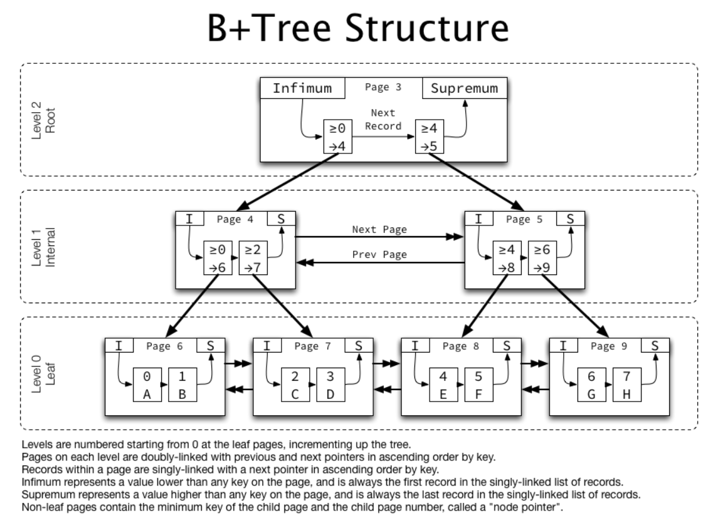
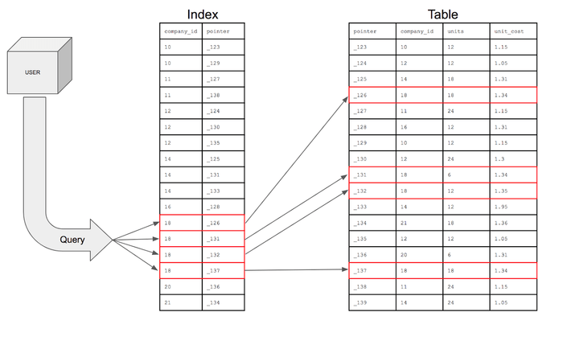
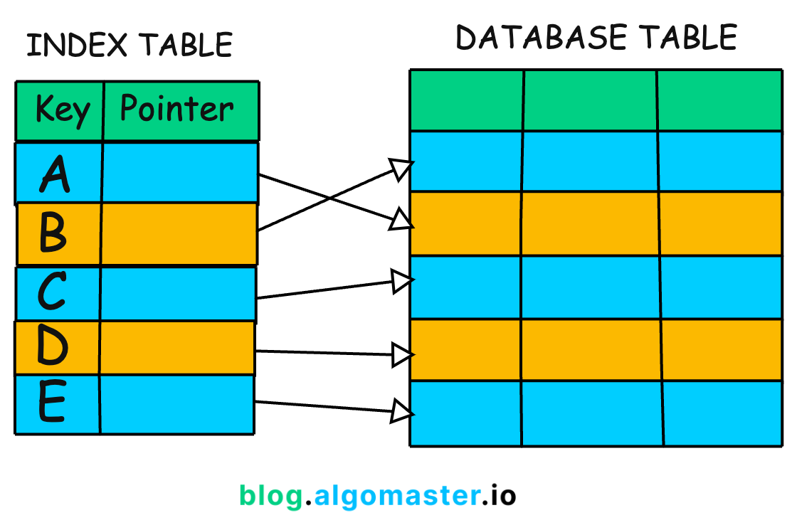
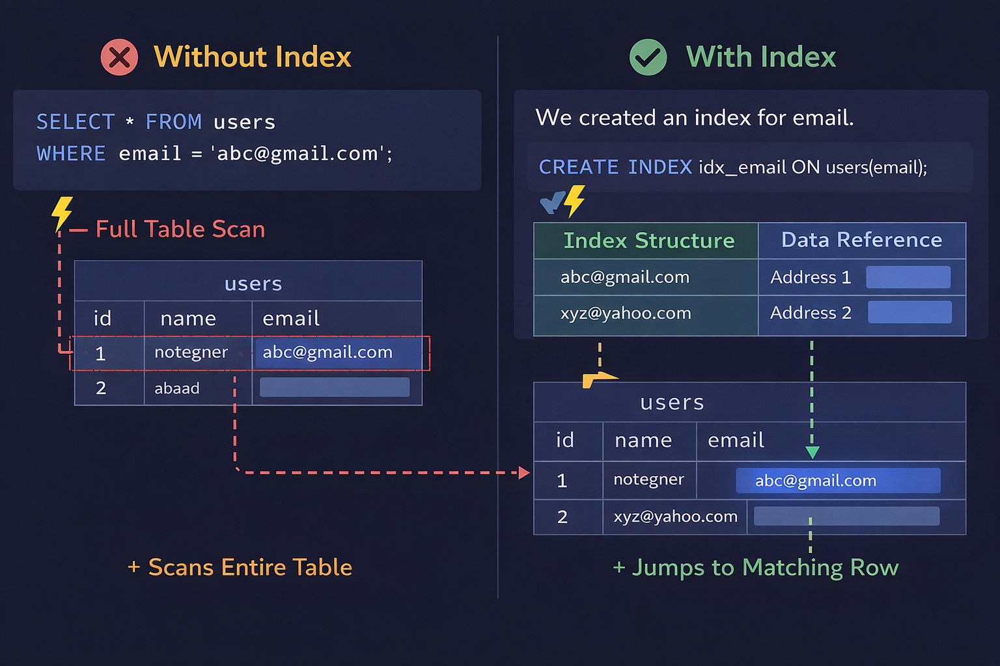
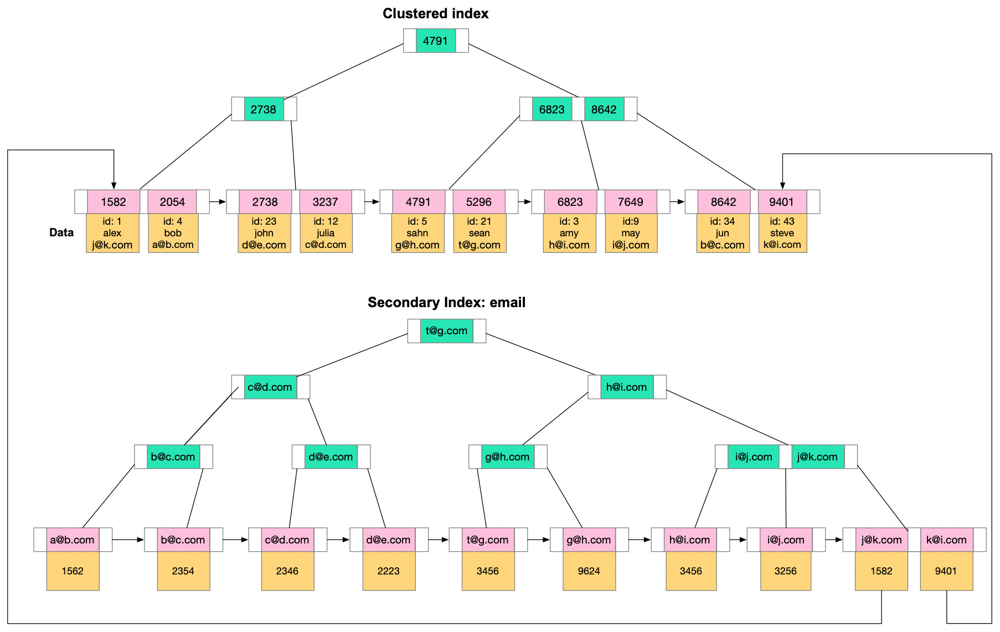
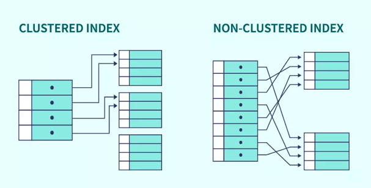
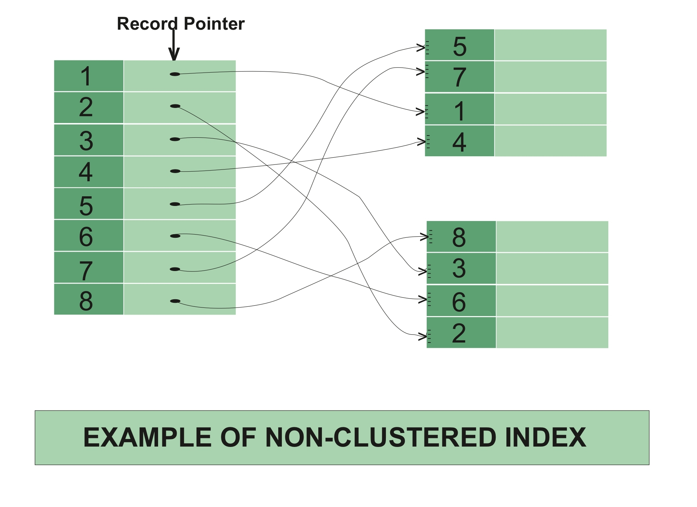

System Design Mastery
Master scalable systems with premium insights
🗂️ Data Indexing: Speed Up Queries with Smart Data Structures
1️⃣ What is it?
Indexing is a technique used in databases to speed up data retrieval. An index is a separate data structure (usually a B-Tree or Hash structure) that helps the database locate rows faster without scanning the entire table.
Simple Concept:
Index = Shortcut to find data quickly
The Index tells where data is located, so the database doesn't need to scan every row.

Real-World Analogy:
📚 Finding a topic in a book:
- ❌ Without index → Read all 500 pages
- ✅ With index → Jump directly to page 234
2️⃣ Why Does It Exist? (What Problem Does It Solve?)
❌ Without Indexing:
Database performs Full Table Scan:
- 🔍 It checks every row
- ⏱️ Very slow for large datasets
- 🔥 CPU intensive operation
✅ Indexing Solves:
- 🚀 Slow query performance
- ⚡ High query latency
- 🔎 Large data search inefficiency
🎯 Impact:
- 📊 Queries run in milliseconds
- 💪 Better system performance
- 😊 Better user experience
3️⃣ What Breaks Without It?
Without indexing, database performance degradation becomes severe:
- 🐌 Queries become slow
- 🔥 High CPU usage (100% scanning)
- ⏳ Increased latency
- 😞 Poor user experience
📌 Real Example:
Searching 1 user from 10 million rows without index → slow ❌
Database would need to check millions of rows before finding the right one.
4️⃣ One Common Mistake: Over-Indexing
🚨 Over-Indexing Warning:
- ⚠️ Too many indexes
- 🐢 Slows INSERT/UPDATE/DELETE operations
- 💾 Increases storage usage
- 🔧 Increases maintenance cost
💡 Key Remember:
Index improves read performance but slows write performance.
👉 Index only frequently queried columns.
5️⃣ Real App Connection
🛒 E-commerce
- 📌 Index on product_id
- 👤 Index on user_id
- 📅 Index on order_date
💳 Payments
- 🔑 Index on transaction_id
- 💰 Index on account_id
- ⏲️ Index on timestamp
📱 Social Media
- 🔍 Index on username
- 📧 Index on email
- 👑 Index on user_id
6️⃣ Why Not Index Everything?
❌ Drawbacks:
- 💾 Index consumes storage
- 🐢 Slows write operations
- 🔧 Increases maintenance cost
- 📊 Not all columns benefit
✅ Best Practice:
- 🎯 Index frequently queried columns
- ⚖️ Balance read vs write
- 📈 Monitor query patterns
- 🧹 Remove unused indexes
7️⃣ How Does Indexing Work? (The Process)
Let's say you have 10 million users and run this query:
SELECT * FROM users WHERE user_id = 9000000;
❓ How does the database find that row?
❌ Case 1: Without Index
Database will:
- 🔍 Start at row 1
- ✅ Check user_id → Not match → go next
- ✅ Repeat until it finds 9000000
Called: Full Table Scan
Time complexity: O(n)
For 10 million rows → ⏱️ Very slow
✅ Case 2: With Primary Index (Real World)
When you create table:
user_id INT PRIMARY KEY
Database automatically creates a B-Tree index.
Internally:
5000000
/ \
2500000 7500000
... ...
When searching 9000000:
- 🌳 Go to tree root
- ⚖️ Compare & jump right branch
- ↻ Repeat → Finds exact row quickly
Time complexity: O(log n)
⚡ Very fast even for millions

🌍 Real-World Flow (What Actually Happens)
User logs into Instagram:
- 👤 User enters phone number
- 💻 Query runs
SELECT * FROM users
WHERE phone_number = '9876543210';
If phone_number is indexed:
- ⚡ Database does NOT scan whole table
- 🚀 Jumps using index
- 📍 Finds row location
- 📦 Fetches data
- ⌚ Total time: milliseconds

🔑 How Index Works:
Index stores:
The Process:
- 🎯 Use index to find location
- 🚀 Jump to actual row in table
- 📤 Return data

8️⃣ Types of Indexes (Important)
1️⃣ Primary Index
What it is:
Index created automatically on the Primary Key.
Example:
user_id INT PRIMARY KEY
Properties:
- 🔑 Unique (no duplicates)
- 1️⃣ Only one per table
- ⚡ Fast lookup
Real-world use - Login system:
SELECT * FROM users WHERE user_id = 1001;
✅ Fast because of primary index
2️⃣ Secondary Index
What it is:
Index created manually on non-primary column.
Example:
CREATE INDEX idx_email ON users(email);
Why?
Because users search by email.
Real-world - Login by email:
SELECT * FROM users
WHERE email = 'anna@gmail.com';
- ❌ Without index → slow
- ✅ With index → fast

3️⃣ Composite Index (Multi-column)
What it is:
Index on multiple columns together.
Example:
CREATE INDEX idx_name_city
ON users(name, city);
When to use:
When query uses multiple columns together.
Example Query:
SELECT * FROM users
WHERE name='Anna' AND
city='Hyderabad';
⚠️ Important Rule:
Composite index works best in the order defined.
4️⃣ Clustered Index
What it is:
Data stored physically in sorted order of indexed column.

Key facts:
- 1️⃣ Only one per table
- 🔑 Primary key usually clustered index
Why important:
⚡ Faster range queries.
Example:
SELECT * FROM orders
WHERE order_date
BETWEEN
'2024-01-01' AND '2024-01-31';
5️⃣ Non-Clustered Index
What it is:
Separate structure pointing to actual data rows.

Key facts:
- ♾️ Multiple non-clustered indexes allowed
- 🔍 Used for frequently searched columns
- 🔗 Contains column value + pointer
Real-world use case:
E-commerce product search by category, brand, price range
💡 Pro Tip:
- 📊 Monitor query performance: Use database query analyzer to identify slow queries
- 🎯 Index strategically: Focus on SELECT, WHERE, JOIN, and ORDER BY clauses
- 🚀 ANALYZE queries: Use EXPLAIN statement to see if index is being used
- 🔧 Regular maintenance: Remove unused indexes, rebuild fragmented ones
- ⚖️ Balance act: Too many indexes hurt write performance, too few hurt read performance
🎯 Summary
Data Indexing is a database optimization technique that creates a separate data structure (B-Tree, Hash, etc.) to improve query performance by enabling faster data retrieval without full table scans.